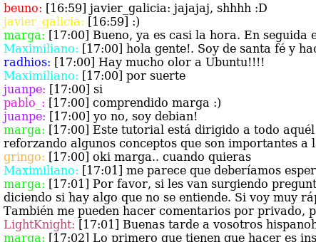
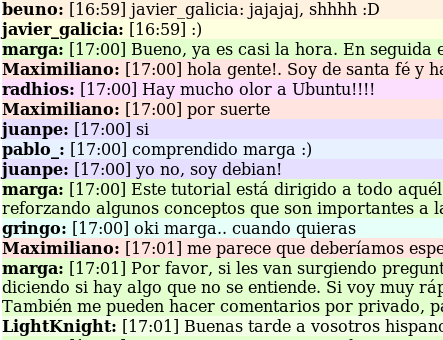

irc2html.py
Ayer colgué del blog el log de un tutorial dictado a través del IRC. Cuando busqué en Google un formateador de logs de irc no encontré lo que buscaba. El principal feature que me interesaba era que se distinga a los diferentes usuarios con diferentes colores. Probablemente podría haber buscado con un poco más de empeño y habría encontrado lo que buscada, al fin de cuentas ya había usado un programa así hace unos años, pero me hubiera perdido de una hora entretenida programando y aprendiendo Python.
Script irc2html.py
Primero lo primero. Tal vez llegaste a este blog buscando lo mismo que yo pero más adelante en el tiempo. Good news: irc2html.py. UPDATE: irc2html-f.py es una versión mejorada tras recibir un comentario en este post.
Uso:
./irc2html.py charla.log
escribe en la salida estándar código html listo para embeber. También podés hacer:
./irc2html.py charla.log > charla.html
(prometo que tu browser no se va a quejar)
Un color para cada uno
Como decía más arriba, lo que más me interesaba era que se distinga, mediante colores, lo que los distintos usuarios dicen. Esto se hace más difícil a medida que aumenta el número de usuarios. La dificultad radica en encontrar colores lo suficientemente diferentes como para distinguir a los usuarios. Lo primero en lo que pensé fue en hacer una función que reciba un color inicial y que luego vaya saltando por la paleta de colores a medida que iba necesitando más colores.

Hice algunas pruebas pero no prosperaron. Por suerte esto me sirvió como escusa para practicar yield y generadores y Python. Terminé con una implementación mucho menos ambiciosa que la original:
# Generador de colores:
#
# Para ayudar a distingir lo que dice un usuario de lo que dice otro,
# se utilizan distintos colores para cada uno.
#
# La idea original del generador de colores era que vaya saltando por
# la paleta de colores según un patrón matemático.
# La actual implementación es más simple y etática.
color_list = ['ff0000', 'fff200', '00ff00', '00fff2', '0000ff', 'aa18ff',
'ff00fb', 'fbb636', 'b1466b', '3d3166', 'bfbf2e', '377972']
# Lighter colors:
#color_list = ['fff1df', 'feffdf', 'e3ffce', 'ffe4df', 'fcdfff', 'e7dfff',
# 'e7f1ff', 'e7fff9', 'f3ffe7', 'e9e9e9', 'ffedb9', 'f0e9d5']
def color_gen(l):
colors = l[:]
colors.reverse()
while True:
if colors:
yield colors.pop()
else:
colors = l[:]
Expresiones regulares
En el script hago uso de expresiones regulares para parsear las líneas del archivo de log. El archivo sobre el que trabajé tenía dos tipos de líneas. Con mensajes de usuarios, como:
'<pablo_!~pablo@r190-64-130-143.dialup.adsl.anteldata.net.uy> [17:00] comprendido marga :)\n'
o de información como:
'-charm.oftc.net- [17:00] garaguas (~garaguas@host193.200-82-125.telecom.net.ar) joined the channel\n'
Me interesan la primeras, a las segundas las puedo ignorar. La expresión regular que usé fue:
'\<(?P<nombre>.+)!.*\>(?P<dicho>.+)$'
y se lee:
1) el carácter '<'.
2) de 1 a n caracteres de cualquier tipo (excepto '\n') y a las cadenas que matchen en esta parte de la expresión voy a referenciarlas luego como 'nombre'.
3) el carácter '!'.
4) de 0 a n caracteres de cualquier tipo (excepto '\n').
5) el carácter '>'
6) de 1 a n caracteres de cualquier tipo (excepto '\n') y a las cadenas que matchen en esta parte de la expresión voy a referenciarlas luego como 'dicho'.
7) final de línea ($).
Un ejemplo en el REPL de Python:
>>> import re
>>> a = '<pablo_!~pablo@r190-64-130-143....> [17:00] comprendido marga :)n'
>>> b = '-charm.oftc.net- [17:00] garaguas (~garaguas@host...) joined the channeln'
>>> rex = <(?P<nombre>.+)!.*>(?P<dicho>.+)$'
>>> pat = re.compile(rex)
>>> m = pat.match(b)
>>> m
>>> m == None
True
>>> m = pat.match(a)
>>> m
<_sre.SRE_Match object at 0x8707698>
>>> m.group('nombre')
'pablo_'
>>> m.group('dicho')
' [17:00] comprendido marga :)'
Resultado final
Comentando y descomentando las líneas:
#line_format = "<span style='color:#%s'>%s:</span>%s<br/>" line_format = "<div style='background-color:#%s'><b>%s:</b> %s</div>"
se pueden obtener dos resultados distintos:
Formato 1:

Formato 2:

Notas finales
- Espero este script les haya sido útil, ya sea para formatear logs de irc como para seguir aprendiendo Python (yo en particular casi no había usado yield y con re solo había hecho pruebas).
- La primer imagen del post es una composición de una captura de pantalla y esta linda imagen lgpl de un gotero.
Comentarios
Comments powered by Disqus